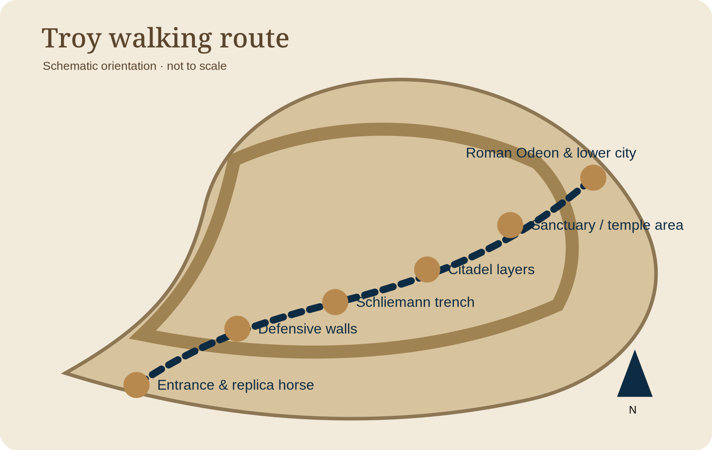

Troy chapters
Read the hill in order
The route below is schematic, but it gives you a reliable sequence for understanding the site.
Archaeological site orientation

Tap the map to open it full screen, then pan and zoom.
Entrance & replica horse
Use it as orientation, then shift attention to the mound and plain.
Defensive walls
Look for the inward slope and immense masonry associated with the Bronze Age citadel.
Schliemann trench
See how early excavation methods cut through layers that modern archaeologists would document more carefully.
Citadel layers
Compare building techniques and ask which phase each wall belongs to.
Sanctuary & temple area
Later Greek activity shows how Troy remained important long after the Bronze Age.
Roman Odeon & lower city
The Roman layer makes the site’s long afterlife visible.
Landmarks along the route